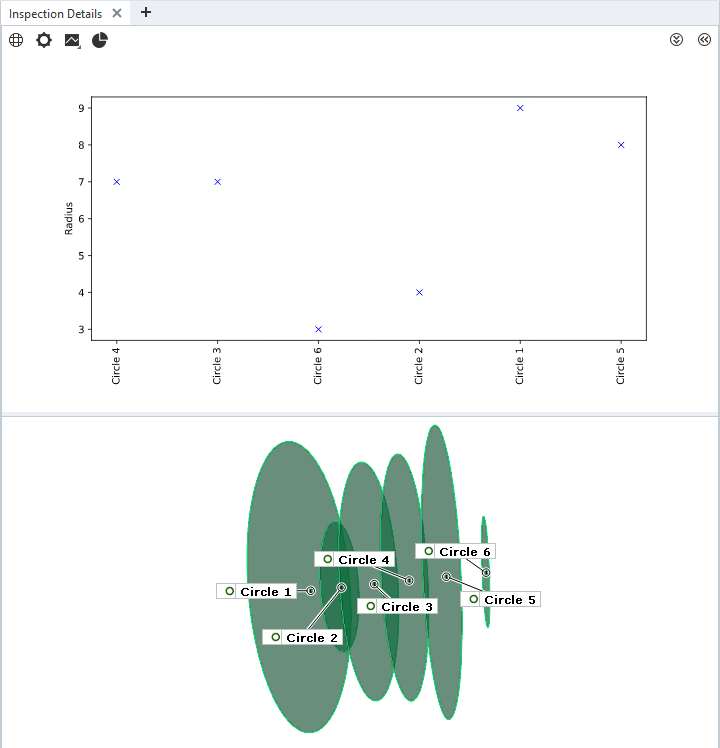

Using scripted diagrams

Abstract: Scripted diagrams allow visualization of any kind of data available within ZEISS INSPECT in any diagram style provided by Python packages like Matplotlib or user-defined code. Scripted diagrams are a complement to the ZEISS INSPECT built-in diagrams. They receive data from specific scripted elements and provide an SVG (Scalable Vector Graphics) image which is displayed on the tab Inspection Details in the 3D view. Scripted diagrams have been introduced in ZEISS INSPECT 2025.
Note
Scripted diagrams are updated automatically if any contributing scripted element changes.
Note
You can use multiple scripted diagrams at the same time, which will be stacked vertically in the Inspection Details tab.
Prerequisites
The concept of scripted diagrams builds upon scripted elements and services. Tokens on scripted elements are used to convey data to the diagram service.
Usage
1. Create or modify scripted elements to contribute data to a scripted diagram
Any kind of scripted element can provide data to a scripted diagram.
In the scripted element’s calculation() function, apply context.data[] as in this example:
context.data[stage] = {
"ude_diagram_custom": 1, # mandatory, fixed
"ude_diagram_type": "SVGDiagram", # mandatory, fixed
"ude_diagram_service" : "gom.api.diagram.radius_plot", # <service_endpoint>.<service_function_name>
# add any number/type of parameters for use in a diagram
# prefix must be ude_diagram_
"ude_diagram_radius": params['radius']
}
The dictionary elements
"ude_diagram_custom"and"ude_diagram_type"are currently fixed. Additional diagram types might be added later."ude_diagram_service"maps the scripted element to a diagram service, which is defined in the App’smetainfo.jsonfile.Any number and type of parameters to be passed to the diagram service can be added. The prefix
ude_diagram_is mandatory.
2. Define the diagram service in metainfo.json
3. Create the diagram service function
Important
The service script name must be the same as defined in
metainfo.jsonThe service function name must be the same as set in the scripted elements’
"ude_diagram_service"parameter.
The following script serves as a minimum template for a scripted diagram service:
import gom
from gom import apifunction
import gom.api.extensions.diagrams.matplotlib_tools as mpltools
@apifunction
def diagram_service_template(view, element_data)->str:
gom.log.info('Diagram Service Template')
gom.log.info(f'{view=}, {element_data=}')
# Prepare plotting
mpltools.setup_plot(plt, view)
for e in element_data:
# Read the the current element
element = e['element']
# Read all parameters received from mapped scripted element
data = e['data']
# Create your diagram
# Example:
# plt.plot ([element.name], [data['ude_diagram_radius']], 'bx')
return mpltools.create_svg(plt, view)
gom.run_api()
To export the diagram as SVG file (e.g. for debugging):
# Set path for debugging
#SVG_PATH = None
SVG_PATH = 'C:/temp/ScriptedDiagram.svg'
@apifunction
def diagram_service_template(view, element_data)->str:
# ...
svg = mpltools.create_svg(plt, view)
if SVG_PATH:
with open(SVG_PATH, "w") as f:
f.write(svg)
return svg
gom.run_api()
Error handling
Errors in a scripted diagram service function are reported into the service’s log, see Using services.
Errors related to the connection between scripted elements and a diagram service are shown in the Inspection Details tab instead of an actual diagram: